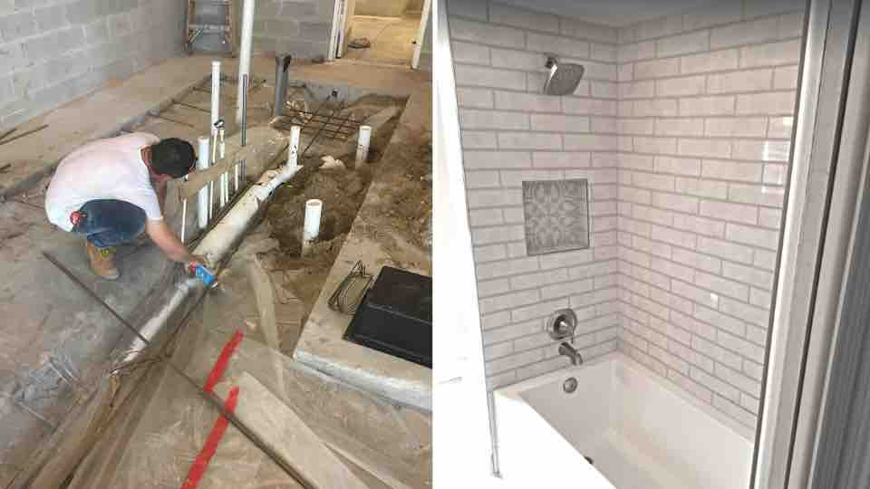

Plumbing Repair
6 Common Plumbing Problems You Shouldn't Ignore
Clogged drains, running toilets, low water pressure, dripping taps — these issues won't fix themselves. Here are six of the most common plumbing problems and what you can do about them before calling a professional.
Read Full Article →